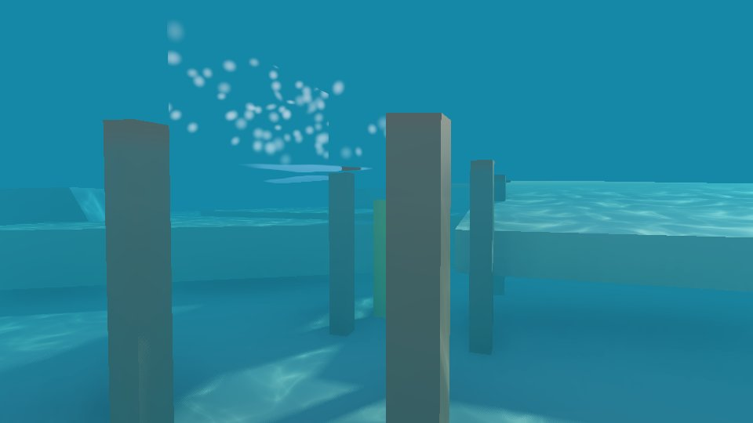
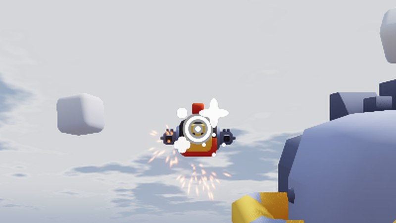
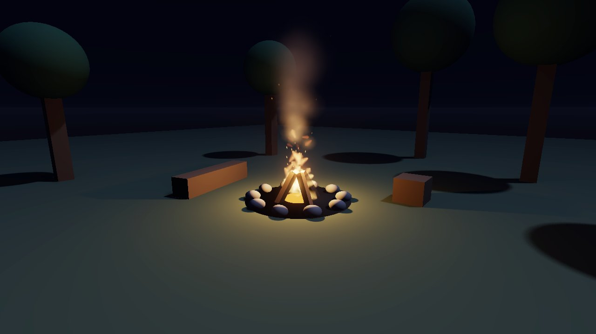

Guide: Rendering & Lights
How things get on screen: primitives, cameras, the sun, the environment (ambient, fog, tone mapping), and quality presets.
Drawing primitives#
entity.add(at.MeshRenderer.cube(size=1.0, color=(r, g, b, a)))
entity.add(at.MeshRenderer.sphere(size=1.0, color=(r, g, b, a)))
entity.add(at.MeshRenderer.quad(size=1.0, color=(r, g, b, a)))sizesets the primitive's base size (a sphere's diameter); the entity'sTransform.scalemultiplies it. A floor is a unit cube withscale=(40, 1, 40).quadlies in the XY plane facing +Z — billboards, cards, flat details.- Colors are linear-space floats in
0.0..=1.0. - Primitives are plain data: safe to stage before a window exists and inert in headless mode. The windowed driver uploads them to the GPU on the first frame automatically.
Surfaces#
Colour says what a thing is; the surface says what it's made of. Every
MeshRenderer constructor takes four keyword-only surface arguments:
gold = at.MeshRenderer.sphere(color=(1.0, 0.77, 0.34, 1), metallic=1.0, roughness=0.3)
tile = at.MeshRenderer.cube(color=(0.9, 0.9, 0.9, 1), roughness=0.15) # glossy
felt = at.MeshRenderer.cube(color=(0.2, 0.5, 0.3, 1), roughness=0.95) # matte
lamp = at.MeshRenderer.quad(emissive=(1.0, 0.8, 0.5), emissive_strength=4.0)| Argument | Range | Effect |
|---|---|---|
roughness | 0..1 | 0 is a mirror-like gloss with a tight, bright highlight; 1 is chalky with no visible highlight. Default 0.6 |
metallic | 0 or 1 (in between for dusty / painted metal) | Metals have no diffuse colour: they reflect the sky and sun tinted by color. Default 0 |
emissive | (r, g, b), ≥ 0 | Light the surface gives off itself, unaffected by sun, shadow or fog darkness |
emissive_strength | ≥ 0 | Multiplies emissive. Above about 1 it blooms on Ultra and Beautiful |
glow_light | ≥ 0 | How much the glow lights nearby surfaces (see below). 1 by default, 0 turns it off |
glow_shadows | True / False | Whether objects block that light and cast shadows from it (High and up). True by default |
Tips:
- Metals look best with a bright, saturated base colour: gold
(1.0, 0.77, 0.34), copper(0.95, 0.64, 0.54), silver(0.95, 0.95, 0.95). They need a sky to reflect, so pair them with an Environment. - Shiny surfaces show their shape best on round things. A glossy cube only lights up when a face catches the sun.
- Models keep their own materials: glTF base colour, roughness, metallic,
normal maps, emission (
KHR_materials_emissive_strengthtoo) and texture maps are all imported. Passingroughness/metallic/emissiveoverrides every part of the model.
Every quality level shades surfaces; Beautiful uses the full physically based model, Low to Ultra a cheaper approximation that looks close.
Glowing objects light their surroundings#
Anything that glows also lights the things around it, in its own colour: a lamp sphere throws a warm pool on the floor and the wall behind it, glowing coins light the ground under them, a neon sign tints the street. Nothing to set up: the engine turns every glowing mesh into a light at its center.
lamp = at.MeshRenderer.sphere(0.4, color=(0.1, 0.1, 0.1, 1),
emissive=(1.0, 0.55, 0.2), emissive_strength=5.0)- How bright: as bright as a real glowing object of that size and brightness. A bigger or brighter glow lights more, and farther. The light fades with the square of the distance and stops where it's too dim to see.
glow_lightscales it:0glows without lighting anything (screens, UI-like signs, distant windows),2–5for small things that should still throw a visible pool, like the coins in Coin Run.- Night and dusk show it best. In daylight the sun outshines all but the brightest glows.
- Models: glowing parts of a model light too. An emissive texture lights in proportion to how much of it is lit (a few windows light less than a whole glowing wall).
- Shadows: on High and up, objects block glow light: crates around a
lantern throw long shadows outward across the floor, and a pillar
between a lamp and a wall leaves its outline on the wall. The glowing
mesh itself never blocks its own light.
glow_shadows=False(Oberon: untick Glow Shadows) lets a glow's light pass through everything, which is cheaper; use it for small or unimportant glows. - Limits: a frame shades at most 4 (Low), 8 (Medium), 16 (High) or 32
(Ultra, Beautiful) glow lights (placed lights, below, count too); with more, the ones nearest the camera
win. Of those, the nearest 2 (High) or 4 (Ultra, Beautiful) that have
glow_shadowson cast shadows. The rest light through walls, and so does every glow on Low and Medium.
Cameras#
at.Camera3D(position=(0, 3.5, 9), target=(0, 1, 0), fov=60.0)
at.Camera2D(center=(0, 0), half_height=100.0)- The first entity with a camera component is the frame's camera (3D for meshes, 2D for sprites).
- No camera → meshes fall back to
(0, 0, 5)looking at the origin; sprites fall back to screen-space pixels, origin top-left, +Y down.
Follow camera — cameras are writable per frame, so tracking a player is three lines (smooth exponential follow):
def on_update(self, ctx):
px, py, _ = ctx.scene["player"].transform.position
blend = min(1.0, 8.0 * ctx.time.delta) # frame-rate independent
self.cam_x += (px - self.cam_x) * blend
self.cam_y += (max(py + 1.6, 2.6) - self.cam_y) * blend
ctx.scene["camera"].camera_3d = at.Camera3D(
position=(self.cam_x, self.cam_y, 10.0),
target=(self.cam_x, self.cam_y - 1.4, 0.0),
)The sun#
scene.add(
at.Entity("sun").add(
at.DirectionalLight(
direction=(-0.45, -1.0, -0.3), # where the light travels
color=(1.0, 0.96, 0.88), # warm afternoon
ambient=0.35, # fill on shadowed faces
shadows=True, # shadow mapping on
shadow_distance=120.0, # metres of shadows (shorter = sharper)
shadow_softness=1.0, # 0 sharpest .. 8 very soft
)
)
)- The first
DirectionalLightentity lights the frame. No light entity → a neutral shadowless default (the scene is still visible). - Meshes are Blinn-Phong shaded:
ambient * coloreverywhere, plus sun-colored diffuse and a subtle specular highlight where lit. - Shadows are shadow-mapped automatically, so any level size works.
On High and up the view is split into cascades (2 on High, 3 on Ultra,
4 on Beautiful): the first covers the few metres around the camera at
full resolution, so shadows under the player are sharp, and each next
one covers farther, coarser. Cascade edges blend, and shadows fade out
at
shadow_distance. A small level is covered only as far as it reaches, so it gets even sharper shadows. Medium uses one map around the whole scene (or the view, if that's smaller). Shadowed regions keep the ambient term. shadow_distance(metres, default 120): how far shadows reach. Shorter is sharper: a tight indoor or top-down game can use 30–50.shadow_softness(default 1): how soft shadow edges are. 0 is as sharp as the shadow map allows, higher values blur the edge (Beautiful shows the most difference; High and Ultra stay crisp). On Beautiful, shadows are sharp where an object touches the ground and soften with the distance to it, as much as the sun's size (sun_size) times the softness says: a pole's shadow starts crisp at its foot and blurs toward its tip.
Point lights and spotlights#
Place lights anywhere: a torch on a wall, a lamp post, a car's headlights,
a flashlight. A PointLight shines every way from its entity's
position. A SpotLight shines in a cone along its entity's forward
direction (local −Z, turned by the entity's rotation).
# A torch on a wall: warm, reaching about 10 m.
scene.add(at.Entity("torch")
.add(at.Transform(position=(-2.2, 2.5, -3.45)))
.add(at.PointLight(color=(1.0, 0.58, 0.28), intensity=3.5, range=10.0)))
# A headlight: a 26° cone tipped 9° down toward the road.
scene.add(at.Entity("headlight")
.add(at.Transform(position=(2.0, 0.72, 0.55),
rotation_euler=(math.radians(-9), 0, 0)))
.add(at.SpotLight(intensity=18.0, outer_angle=26.0, inner_angle=12.0,
range=22.0)))| Setting | Values | What it does |
|---|---|---|
color | RGB 0..1 | The light's colour |
intensity | ≥ 0 | Brightness. 1 lights a surface 1 m away, facing the light, as brightly as a white sun overhead; at 2 m it's a quarter of that. Torches and lamps: 2–6. Headlights and stage lights: 10–30 |
range | m, 0 = auto | Where the light ends. 0 works it out from the brightness, ending where the light is too dim to see. Set a range to keep a light inside a room |
outer_angle | degrees, ≤ 80 | (Spot) the cone's edge, measured from its axis. A 30° spot is 60° across |
inner_angle | degrees | (Spot) full strength inside this angle, fading out toward the edge. Defaults to ¾ of outer_angle; closer to it gives a harder edge |
radius | m | The size of the glowing source (default 0.05). Bigger looks softer up close |
shadows | True / False | Whether objects block it and cast shadows (High and up). True by default |
- Shadows: placed lights share the shadow budget with glowing meshes. High shadows the 2 nearest point lights and Ultra and Beautiful the 4 nearest. A spotlight costs a sixth of a point light, because its shadow is one view down the cone rather than six around it. So one point light's room shadows six spots, and a pair of headlights is cheap.
- Fixtures don't block their own light: a light inside a small mesh
(up to about half a metre across: a bulb, a flame, a headlight lens)
leaves that mesh out of its shadow. Give the mesh
glow_light=0so it glows for the look without adding a second light. - Limits: placed lights count toward the same per-frame cap as glows (4, 8, 16 or 32 lights from Low to Beautiful); the nearest and brightest win.
- Oberon: Create → Point Light or Spot Light. Selecting a light shows its reach in the viewport: three rings for a point light's range, or a spot's cone out to its range (the core is the fainter circle). Aim a spot with the Rotate tool.
- Example:
examples/oberon/night_lightshas a torch on a wall and a car with two headlights, all shadowed, with no light coming from a glowing mesh.
Environment#
The Environment component sets the look of the whole frame:
- hemisphere ambient light (sky above, ground below)
- the background colour
- exposure and tone mapping
- distance fog
The first entity that carries one wins.
scene.add(at.Entity("look").add(at.Environment.preset("dusk")))or spelled out:
scene.add(
at.Entity("look").add(
at.Environment(
sky_color=(0.75, 0.85, 1.0), # ambient from above
ground_color=(0.45, 0.4, 0.35), # ambient from below (bounce)
background=(0.55, 0.68, 0.85), # replaces Game.clear_color
exposure=1.1,
tonemapping="aces", # "none" | "reinhard" | "aces" | "agx"
fog=True,
fog_color=(0.55, 0.68, 0.85), # match the background
fog_density=0.012, # per metre; 0.05 is thick
fog_start=10.0, # metres of clear air first
sky=True, # a sky dome with a sun and clouds
zenith_color=(0.16, 0.34, 0.78), # sky colour straight up
sun_size=2.0, # sun disk diameter, degrees
sun_glow=1.0, # halo around the sun
clouds=0.35, # 0 clear .. 1 overcast
lens_flare=1.0, # Beautiful only
ambient_occlusion=1.0, # Beautiful only: 0 off .. 2
)
)
)| Preset | Look |
|---|---|
"neutral" | The default: white ambient, no fog, no tone mapping |
"daylight" | Blue sky dome with sun and clouds, warm bounce, light haze, ACES |
"dusk" | Violet sky with a big warm sun, dark red ground, dense warm fog, AgX |
"night" | Near-black sky, cold dark ambient, black fog close to the camera, ACES |
How it combines with the sun:
The sky (
sky=True) replaces the flat background with a dome: a gradient frombackgroundat the horizon tozenith_coloroverhead, the sun's disk exactly where theDirectionalLightshines from, a halo that turns warm as the sun gets low, and two layers of drifting clouds. Water reflects it and distant fog fades into it, so the horizon has no seam. Move the sun (or drag Time of Day in Oberon) and the sky follows.Lens flare (
BEAUTIFULonly): looking toward the sun adds glare, a starburst, a row of coloured ghosts and a faint halo ring. It fades out when the sun leaves the screen, and anything in front of the sun, scenery or clouds, hides it.Ambient occlusion (
BEAUTIFULonly): nearby geometry blocks part of the sky's light, so creases, inside corners and the ground around and under objects get darker. It only dims ambient light, so it shows most in shade.ambient_occlusionsets the strength: 0 off, 1 default, 2 strong.
- Ambient is
DirectionalLight.ambient × mix(ground, sky), picked by how much a surface faces up. Keep the sky and ground colours near 1.0 in brightness and control strength withambient. - Sky-tinted shade: with the sky dome on, the ambient from above leans
a little toward
zenith_colorat the same brightness. Shade is lit by the sky alone, so shadows and shaded sides turn faintly blue on a clear day (or violet at dusk) instead of grey. - Fog fades lit colour toward
fog_coloras1 − exp(−density × (distance − start)). - Tone mapping runs last. ACES and AgX roll off highlights smoothly,
so you can use brighter suns and colours without clipping. Raise
exposurea little to compensate for their darker mid-tones. - An Environment is staged data like any other component. It's saved in scene files and edited in Oberon's Graphics tab.
Sky and quality#
class MyGame(at.Game):
clear_color = (0.55, 0.78, 0.95, 1.0) # the "sky" each frame clears to
graphics = at.GraphicsQuality.HIGH| Preset | Shadows | Shadow maps | Glow lights with shadows |
|---|---|---|---|
GraphicsQuality.LOW | off | — | none |
GraphicsQuality.MEDIUM | on | 1 × 1024px | none |
GraphicsQuality.HIGH (default) | crisp | 2 cascades × 2048px | 2 (384px) |
GraphicsQuality.ULTRA | crisp | 3 cascades × 2048px | 4 (512px) |
GraphicsQuality.BEAUTIFUL | soft | 4 cascades × 2048px | 4 (512px, soft) |
LOW is also a style: pure flat-color faces with no shadow shading reads
as clean minimalism. Finer-grained knobs (render scale, MSAA) build on this
same setting as the renderer grows.
Beautiful#
BEAUTIFUL is the showcase preset. On top of what HIGH does it adds:
- Contact-hardening shadows. Four cascades split the view so shadows stay sharp up close and still reach the horizon. Each shadow is sharp where the object touches the ground and softens with the distance to it, scaled by the sun's size.
- Ambient occlusion and contact shadows. A half-resolution
screen-space pass darkens creases and the ground around objects
(ambient light only;
Environment.ambient_occlusionsets how much), and a short ray toward the sun catches small gaps the shadow map is too coarse for, like a coin resting on the ground. - Physically based light (GGX specular) and fog that glows toward the sun.
- HDR with bloom: bright highlights (sun glints on water, white surfaces in full sun) bleed softly. Then the tone mapper runs, and FXAA smooths the edges.
- Refractive water (see below).
- Lens flare when the camera looks toward the sun (with
sky=True).
It's built to stay cheap. Each pixel filters only one shadow cascade (with
dithering where cascades meet), and sunlit pixels skip shadow filtering
after a quick search finds nothing between them and the sun. Ambient
occlusion and bloom run at half resolution and below. Nothing on the other
presets got slower. It
still costs more than HIGH. Offer it as a setting rather than the
default for games that should run on low-end laptops.
Water#
scene.add(
at.Entity("lake")
.add(at.Transform(position=(0, -0.5, 0)))
.add(at.Water.preset("lake")) # or at.Water(size=(60, 40), ...)
)A Water component draws an animated surface size metres wide on the
entity's XZ plane: rolling waves plus scrolling ripples, sky reflection
that strengthens at grazing angles (Fresnel), a sun glint, and light
glowing through wave crests. It receives shadows.
- On every preset below
BEAUTIFULit's alpha-blended over the scene. - On
BEAUTIFULit refracts what's underneath. It fades todeep_colorwith depth (clarityis how many metres you can see down), and drawsfoamwhere it meets the shore or objects.
| Preset | Look |
|---|---|
"pond" / "lake" | Low, short waves and clear water |
"ocean" / "sea" | 200 m wide, tall long waves, deep blue, endless |
"default" | 20 m, gentle waves |


endless=True carries the surface past its size, flat and calm, all
the way to the horizon, so a sea doesn't end in a visible edge. Waves,
foam and buoyancy stay within size; put the action there.
Things that cross the surface leave rings and wakes in it, with foam on
their crests, on every preset (see
Physics → Ripples and wakes). Hit it hard
and it splashes: a burst of droplets as big as the impact. Set wind
above 0.5 and spray blows off the wave crests near the camera, more
the stronger it is (see Physics → Splashes and spray).
Under the surface#
Dive the camera under the water and the view changes, on every preset:
- Fog and colour absorption. Everything fades into the water's
shallow_color, darkening towarddeep_colorwith depth. Red goes first and blue-green lasts, so the deep turns blue-green.clarityis how far you can see. - The surface from below shimmers with the sky through it. Seen at a low angle, it turns into a mirror (total internal reflection).
- A wobbling waterline when the camera sits right at the surface: the frame splits at the waves, with air above and water below.
- Muffled sound. Everything you hear goes through a low-pass filter (650 Hz) while the camera is under, and clears again when it comes up. The engine and Oberon's Play mode do this themselves.
Caustics are the moving net of light that waves focus onto whatever is
under them: the sea floor, a reef, the posts of a pier. They're drawn on
Medium graphics and up, on the nearest four waters, and they're there
whether the camera is above the water or below it. caustics sets their
strength from 0 (none) to 2 (default 1). They fade out with depth.

Water is also physics: dynamic bodies float in it and ride its waves (see Physics → Water). The surface isn't a solid collider, so give the water a floor if sinking things should stop.
Particles#
Fire, smoke, sparks, dust, splashes and magic come from a
ParticleEmitter. Start from a preset and change what you like:
scene.add(at.Entity("campfire")
.add(at.Transform(position=(0, 0.1, 0)))
.add(at.ParticleEmitter.preset("fire")))
scene.add(at.Entity("smoke")
.add(at.Transform(position=(0, 1.1, 0)))
.add(at.ParticleEmitter.preset("smoke", rate=10)))
# From scratch: any field by keyword, the rest default.
mist = at.ParticleEmitter(rate=4, sprite="puff", lit=True, size=(1, 3),
color=(1, 1, 1, 0.3), color_end=(1, 1, 1, 0))| Preset | Look |
|---|---|
"fire" | Glowing flames rising from a small disc, 45 a second |
"smoke" | Lit grey puffs that rise, spread and fade over about 5 s |
"sparks" | A one-off burst of 24 glowing streaks that fall. It removes its entity when it's done |
"dust" | Motes drifting slowly in an 8 × 3 × 8 m box, lit |
"splash" | A one-off burst of 40 water droplets thrown up and out |
"magic" | Purple-blue stars swirling up, glowing |
Particles leave the entity within cone_angle of its up (+Y) axis, so
rotate the entity to aim them. Over each particle's life its size goes from
size[0] to size[1] and its colour from color to color_end.
| Setting | Values | What it does |
|---|---|---|
rate | per second | New particles every second |
burst | count | Particles made all at once when it starts |
duration | s, 0 = forever | How long it makes particles |
one_shot | True / False | Removes the entity once it's done and the last particle is gone |
lifetime | (min, max) s | How long each particle lives (picked at random between the two) |
shape, shape_size | "point", "sphere", "box", "cone"; m | Where particles start. shape_size is a sphere's or cone's radius (x), or a box's half extents. Sphere particles fly outward |
cone_angle | degrees | How far from straight up they may leave (180 = any way) |
speed | (min, max) m/s | Starting speed |
gravity, drag | m/s², per second | Gravity pulls them down (negative rises, like smoke or flames). Drag slows them |
size | (birth, death) m | Size over life. A single number sets both |
color, color_end | RGBA | Colour at birth and death. Over 1 glows: fire and sparks bloom on Beautiful |
fade_in, fade_out | share of life | Fades at the start and end of each life |
spin | rad/s | Spins the sprite |
stretch | s | Streaks particles back along their motion (sparks, rain) |
blend | "alpha" / "additive" | Additive adds light, for fire, sparks and magic. Alpha covers what's behind, for smoke and dust |
lit | True / False | Lit by the sun and placed lights, like smoke a fire colours. Unlit particles show their colour as-is |
soft | m | Fades particles out where they meet the scene, so smoke doesn't show a hard line on the ground |
sprite | "dot", "spark", "star", "flame", "puff" | The built-in picture |
texture, sheet | image path; (columns, rows) | Your own image instead. A sprite sheet's frames play over each particle's life |
world_space | True / False | On by default: particles stay where they were made when the entity moves, so a moving torch leaves a trail. Off, they move with the entity |
max_particles | count | Most alive at once (default 500). Thousands are fine |
One-off effects from scripts. ctx.particles.burst plays an effect
once at a point and cleans up after itself. ctx.particles.emit adds
particles to an entity's own emitter:
hit = ctx.physics.raycast(eye, forward, 100, ignore=entity)
if hit:
# Sparks off the wall, flying back along its normal.
ctx.particles.burst("sparks", hit.point, hit.normal)
ctx.particles.burst("dust", entity, count=20, color=(0.6, 0.5, 0.4, 0.8))
ctx.particles.emit(ctx.scene["Embers"], 15) # the fire pops

- Every preset draws particles. Particles are drawn after the scene (and water), each emitter in one instanced draw. They're simulated on the CPU, so thousands are cheap but hundreds of thousands are not.
- Particles don't light the scene. Put a Point Light in a fire for the firelight, as the campfire example does.
- Oberon: Create → Particles adds a fire. Pick another look from the Inspector's Preset menu. The scene view plays the particles while you edit: one-off effects replay every couple of seconds. Start Glow and End Glow set how far over 1 the colours go.
- Example:
examples/oberon/campfirehas a fire that burns, smokes and crackles. Inexamples/oberon/fps, shots throw sparks where they hit.
Mood recipes#
Without an Environment, these recipes use the plain look. Add a preset on top to get fog and tone mapping too.
| Look | clear_color | sun color | ambient |
|---|---|---|---|
| Noon | (0.55, 0.78, 0.95, 1) | (1.0, 1.0, 1.0) | 0.35 |
| Golden hour | (0.98, 0.75, 0.55, 1) | (1.0, 0.8, 0.6) | 0.25 |
| Night | (0.05, 0.07, 0.15, 1) | (0.6, 0.7, 1.0) | 0.15 |
| Noir | (0.02, 0.02, 0.03, 1) | (1.0, 1.0, 1.0) | 0.05 |
See also#
- The Game Loop — when frames render
- Scenes & Entities — transforms and the scale trick
- Models — imported materials and textures
- Cameras — follow, orbit, rails, shake, zoom
- Cookbook — orbit cams, screen shake
- Oberon: Graphics — tune all of this visually